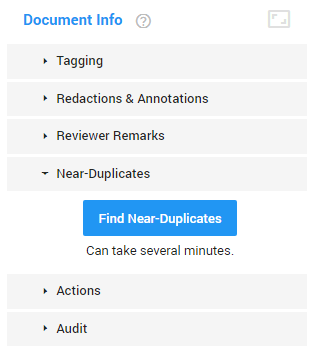
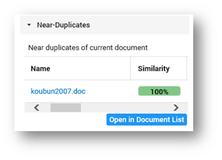
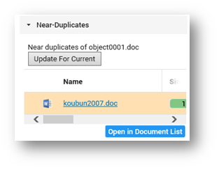
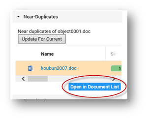

Find near-duplicates of the currently open document. Since it is a time-consuming operation, it must be triggered manually.
In Document View, on the right side of the screen, select Near-Duplicates.

Click Find Near-Duplicates. Results are by default sorted by the percentage of similarity, with the highest percentage on top. You can also sort on one of the other columns. Use the horizontal scroll bar.

View a near-duplicate by selecting it.
The number of near-duplicates can differ depending on the document you start with. For example, if you request near-duplicates of document A, then the result will contain documents B and C. However, if you request near-duplicates of document B, then you might get A, C and some additional documents that are not similar to A, but similar to B.
Return to current document by selecting Update For Current.

Alternatively, open all near-duplicates in the Document List by selecting Open in Document List.

This enables you to review all near-duplicates one by one or to perform Bulk Tagging on all near-duplicates. It will also enable you to filter the list, sort, etc.